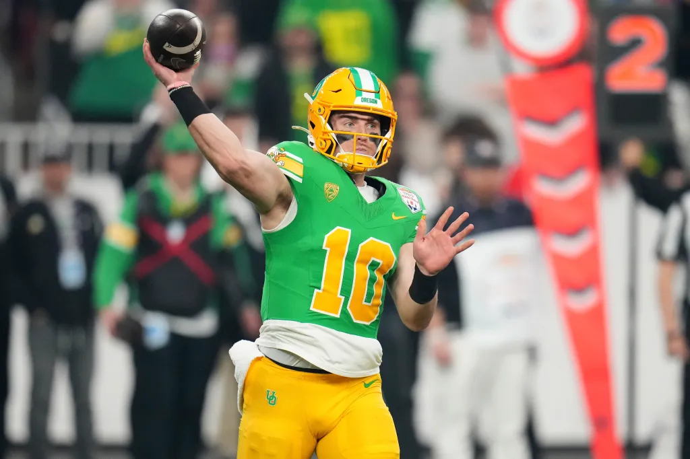
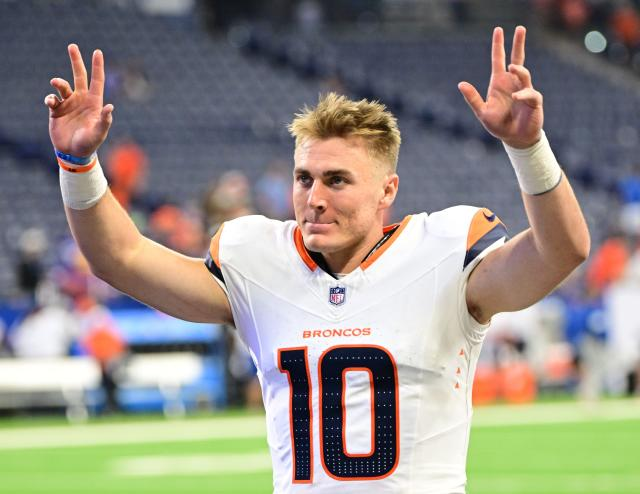
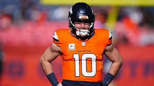

Bo Nix Rookie of the Year Campaign
Bo Nix, the dynamic quarterback from Oregon, has taken the football world by storm with his incredible
performances
during his rookie season. His poise under pressure, versatility, and ability to lead his team make him a
standout
candidate for Rookie of the Year. This accolade is awarded to the most outstanding first-year player, and
Nix
has
proven time and again why he deserves this honor. His leadership both on and off the field has set him apart
from
his peers, making him not just a talented athlete but a crucial cornerstone for his team's success.

One of the primary reasons Bo Nix is leading the race for Rookie of the Year is his remarkable statistical
performance. Throughout the season, Nix has consistently posted high numbers in passing yards, touchdowns,
and
completion percentage. His precision in the pocket and ability to make big plays under duress have drawn
comparisons
to seasoned veterans. For example, his knack for converting on third downs and delivering in clutch moments
has
turned heads, solidifying his status as a playmaker. These impressive stats are a testament to his ability
to
adapt
quickly to the professional level, an essential quality for a rookie.

In addition to his offensive prowess, Nix’s mobility and football IQ have made him a dual-threat quarterback
capable
of keeping defenses guessing. His ability to extend plays with his legs and make accurate throws on the run
has
added a new dimension to his team's offense. Defenses struggle to contain him, as he can just as easily pick
up
critical yards on the ground as he can thread the needle with pinpoint passes. This versatility not only
elevates
his game but also makes him a nightmare matchup for opposing teams, highlighting why he is a frontrunner for
this
prestigious award.

Beyond his individual skills, Nix’s leadership has been pivotal in transforming his team’s performance. As a
rookie,
stepping into a leadership role is no small feat, but Nix has embraced the challenge with confidence and
determination. His ability to rally his teammates during difficult moments and his unwavering commitment to
improvement have been instrumental in fostering a winning culture. Coaches and teammates alike have praised
his
work
ethic and resilience, qualities that are often as important as raw talent in determining a player’s impact.

Another key factor in Nix’s candidacy for Rookie of the Year is his impact on his team’s record. While
individual
stats are crucial, the award often favors players who contribute significantly to their team’s success.
Under
Nix’s
leadership, his team has made substantial progress, frequently competing at a high level and securing key
victories.
This turnaround can largely be attributed to Nix’s ability to elevate the play of those around him,
demonstrating
his value as a team player and a leader.
It is also worth noting that Bo Nix has performed exceptionally well against tough competition, further bolstering his case for the award. Facing some of the league’s top defenses, he has displayed remarkable composure and adaptability. These standout performances in high-stakes situations have set him apart from other rookies, showcasing his ability to rise to the occasion when it matters most.
In conclusion, Bo Nix’s exceptional performance, leadership, and ability to thrive in high-pressure situations make him the clear frontrunner for Rookie of the Year. His contributions to his team’s success, coupled with his versatility and poise, highlight why he is one of the most exciting young talents in football. If his current trajectory continues, there is no doubt that Bo Nix will leave an indelible mark on the sport.
Scroll to top
It is also worth noting that Bo Nix has performed exceptionally well against tough competition, further bolstering his case for the award. Facing some of the league’s top defenses, he has displayed remarkable composure and adaptability. These standout performances in high-stakes situations have set him apart from other rookies, showcasing his ability to rise to the occasion when it matters most.
- Most pass yards among rookies
- Most touchdowns among rookies
- Bo Nix 17
- Jayden Daniels 15
- Drake Maye 11
- Caleb Williams 16
- 1st rookie ever to have 300 passing yards, 4 TDs, 0 INTs and 85% completion in a game
Check out Bo Nix's statistics here
Check out this Bo Nix highlight video below
In conclusion, Bo Nix’s exceptional performance, leadership, and ability to thrive in high-pressure situations make him the clear frontrunner for Rookie of the Year. His contributions to his team’s success, coupled with his versatility and poise, highlight why he is one of the most exciting young talents in football. If his current trajectory continues, there is no doubt that Bo Nix will leave an indelible mark on the sport.
Scroll to top